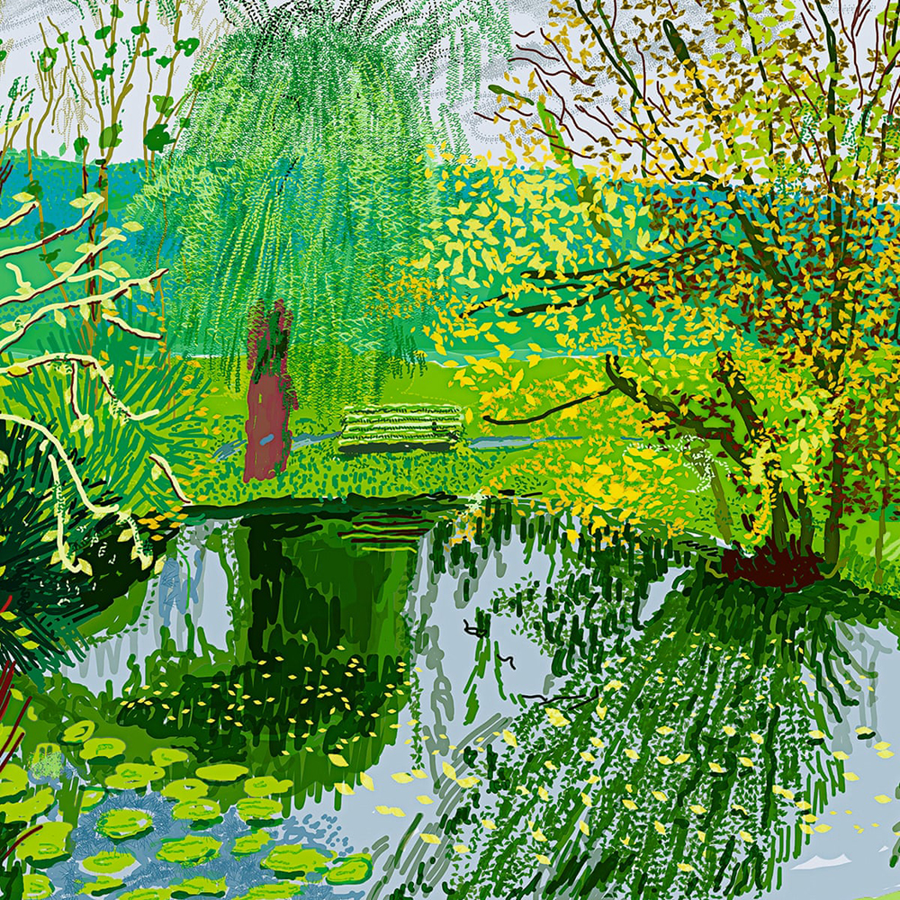
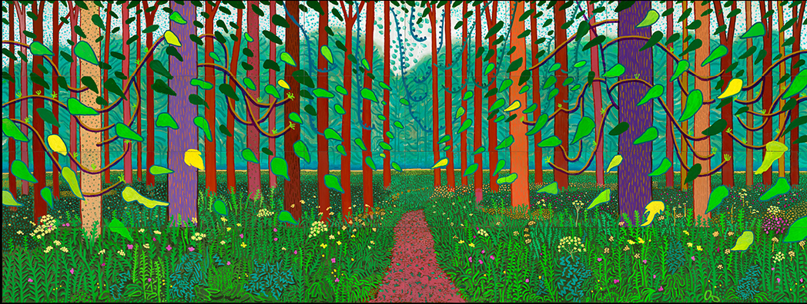
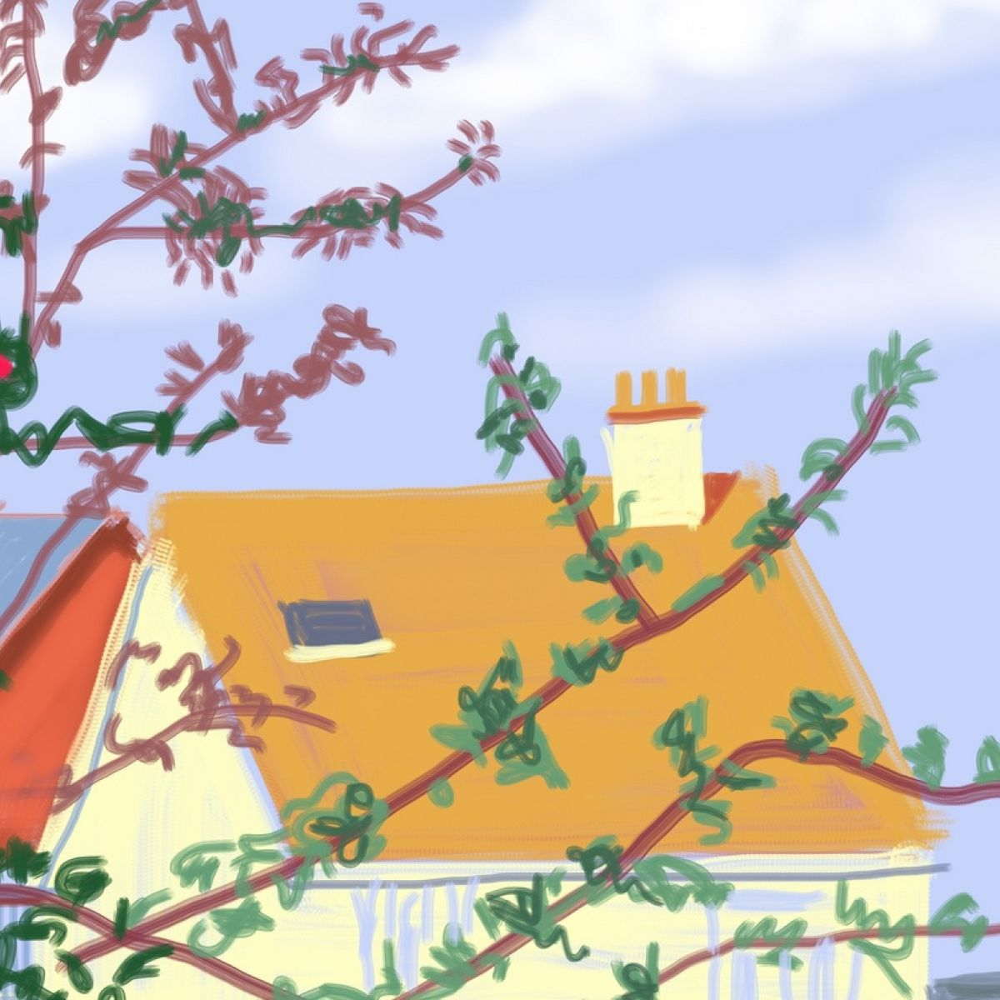

Hockney recaptures traditional subjects like landscapes, portraits, and still-life, on a new form of canvas. As one of the “first serious artists” to use the Paintbox software in the mid-1980s, Hockney has gone on to adopt digital painting on emerging technology. From his iPhone paintings in the early 2000s to the iPad paintings he still makes today, the artist uses new media as an opportunity to reimagine subjects previously bound by physical paint. Hockney jokes “Drawing was going out of style, actually…I’m amazed that the telephone can bring back drawing.
  